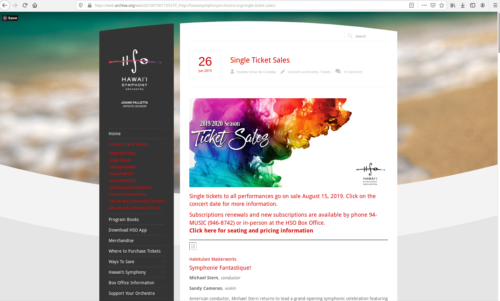

Website Audit (Jun–Aug 2019)
Scenario: Hawaii Symphony Orchestra
Remotely conducted a website audit for Hawaii Symphony Orchestra (HSO) via the Catchafire platform, which pairs volunteer talent with non-profit organizations. Process, findings, and recommendations were documented in a 40-page report for HSO's use in planning their new website.
Through my volunteer hours, this project saved HSO $6,772.
Goals
The goals of this project were posted publicly on Catchafire. Some desired outcomes included guidance on how to update the site to be mobile friendly, highlight video and social media content, improve SEO, and engage visitors.
Approach
My first step was break down the project into seven major topics. For each topic, I reported what the site currently presented and what I would recommend going forward.
- Site Audience - Who is the site for?
- Content Analysis - What should the site contain and how should it be organized?
- Usability Testing - How does the site work currently? What problems do users run into?
- Accessiblity - What is the site's accessibility rating? Does the design follow best practices?
- SEO Analysis - How does the site currently rank with search engines?
- Technology - What can be done to improve security and maintenance?
You can view the old version of the site on web.archive.org:

Process
Using the above outline, I iterated over the site several times, analyzing it from different layers of website design and usability. I also conducted usability tests to identify key problem areas, and analyzed quantitative data from a variety of sources. Tools used include Google Analytics, SEO Spider, WAVE, ADAScan, web.dev, Seobility, and SEO Analyzer.
Below are some samples of the final audit document.

{kind=link}
{kind=link}
{kind=link}
{kind=link}
{kind=link}
{kind=link}
{kind=link}
{kind=link}
{kind=link}
{kind=link}
{kind=link}
{kind=link}
Outcome
Hawaii Symphony Orchestra saved thousands of dollars with this audit and received a detailed report to guide them with their new website design.